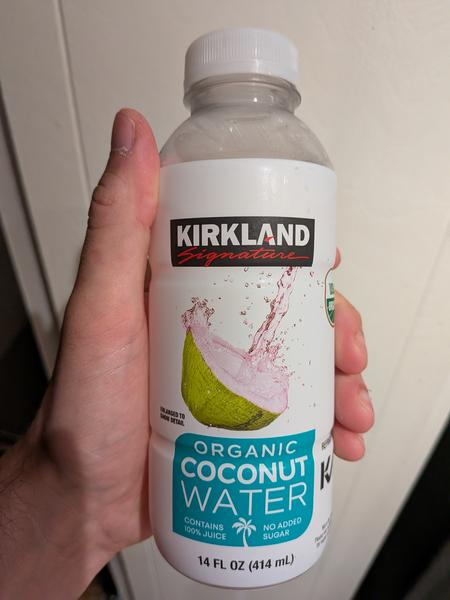

July 2025 · 14 fl oz (414 mL) · Still · Unpasteurized · No Added Sugar · USDA Organic
Costco store brand version of Harmless Harvest. Thai (presumably Nam Hom but not named). Another pink unpasteurized organic bottle — likely from the same factory as the Trader Joe’s and Sprouts organic offerings.
Very good. Better than most of the typical store brand unpasteurized options. Fruity and bright. Very refreshing. But still lacking the depth of the highest caliber waters out there.
These coconuts are grown in habitats threatened by palm oil deforestation. If you find this site useful, consider donating to the Rainforest Action Network.